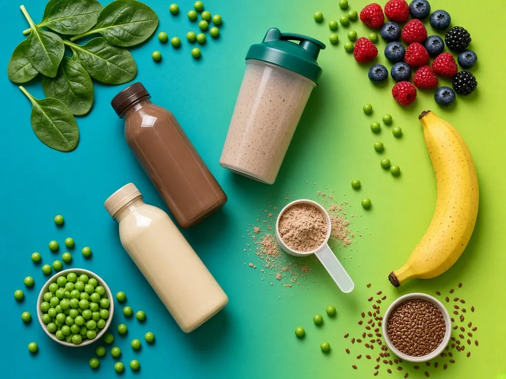
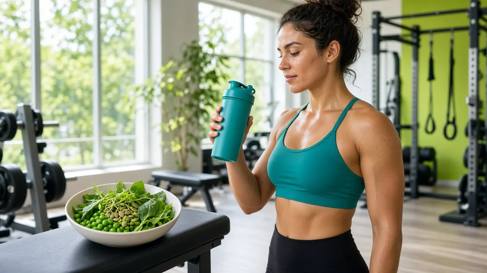
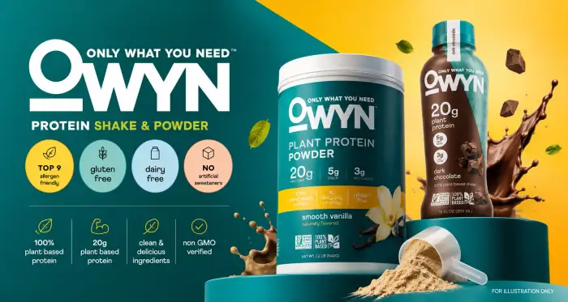
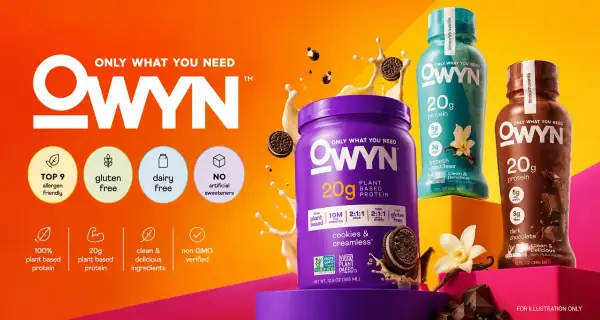
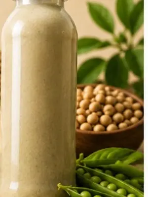
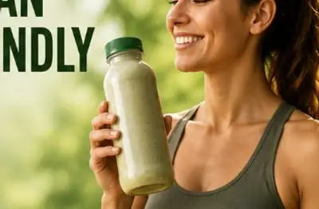
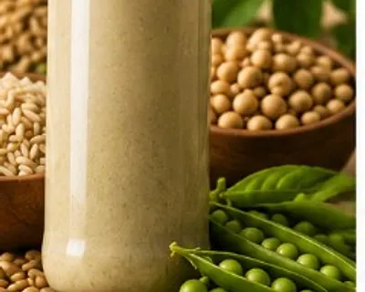
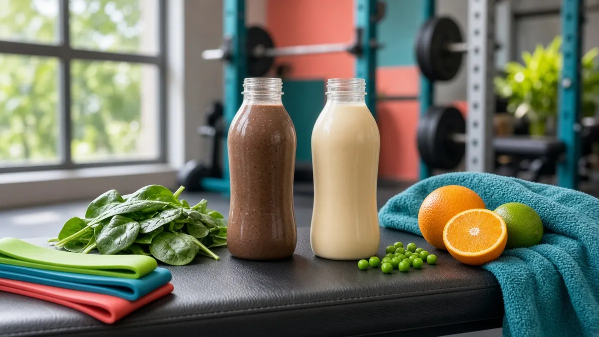

For Vegans
Plant-only protein without dairy
Pea, pumpkin seed, and flax-forward formulas for vegan and dairy-free routines.
See plant ingredientsPlant Power for Vegans & Lifters
Dairy-free, vegan protein shakes built for clean plant nutrition and training-day recovery — flavors, labels, and buying tips in one colorful hub.
Who It Fuels
Whether you want a dairy-free vegan shake or a convenient post-lift protein hit, OWYN keeps plant protein simple and colorful.

Pea, pumpkin seed, and flax-forward formulas for vegan and dairy-free routines.
See plant ingredients
Grab-and-go protein for training days, higher-protein Pro Elite styles, and busy lift schedules.
Explore high-protein options
Introduction
The demand for clean, convenient plant based protein shake and plant protein shakes has increased as more people look for healthier alternatives to traditional dairy-based protein drinks. This product has become a popular choice for anyone who wants a vegan protein shake, protein shakes dairy free, or a simple shake protein option that fits an active lifestyle.
OWYN, which stands for Only What You Need, focuses on Only What You Need protein drink and Only What You Need protein shakes made with plant-based ingredients and essential nutrients — without relying on animal-based protein. For retailers and official support, use where to buy OWYN protein shakes.
An OWYN vegan protein shake, vegan protein drink, or one protein shake from the line can work as a post-workout drink, breakfast option, convenient snack, or everyday plant protein drink. Prefer scoops instead of bottles? See the OWYN protein powder guide.
Searching for “onyx protein shake”? That is a common misspelling of OWYN — you are in the right place for OWYN plant based protein shake information. This site is an independent guide, not the official brand store.

The Brand
OWYN is a plant-based nutrition company that focuses on creating protein shakes and nutritional drinks designed for modern lifestyles. The brand emphasizes convenient nutrition while avoiding common ingredients that many consumers prefer to limit, such as dairy and artificial additives.
The goal behind Only What You Need protein drink products is to provide accessible nutrition for people following vegan, vegetarian, dairy-free, or allergen-conscious diets — including anyone who wants protein shakes vegetarian or vegan protein shakes ready to drink. Learn more about this independent site on About This Website.
Why OWYN
Unlike many traditional protein shakes that use whey protein from milk, OWYN uses plant-based protein sources — a suitable option for people who want protein without dairy.

A multi-source plant protein formula instead of whey or casein.

Made for vegan and vegetarian lifestyles without animal ingredients.
No milk-based protein — ideal for lactose-sensitive consumers.
Grab-and-go convenience for workouts, travel, and busy days.

Formulated for protein support plus everyday wellness nutrients.
Ingredients & Nutrition
A major reason consumers choose an OWYN vegan protein shake is its plant-based protein formula. Instead of using whey or casein protein, OWYN uses a combination of plant sources to deliver protein nutrition in each plant protein shake.
Using multiple plant protein sources helps create a balanced amino acid profile while keeping the product suitable for vegan diets and protein shakes dairy free routines.
Want full label details? See our dedicated guide to protein shake ingredients, nutrition facts, and calories.
Benefits
Protein plays an important role in maintaining muscle mass, supporting recovery, and helping the body perform essential functions. An OWYN plant based protein shake provides a convenient way to add protein to your daily routine without preparing a full meal.
Traditional protein drinks often contain whey protein, which may not be suitable for individuals with lactose intolerance or vegan dietary preferences. OWYN offers an alternative for vegans, vegetarians, dairy-free consumers, and anyone looking for plant-based nutrition.
Modern schedules often make it difficult to prepare balanced meals. A ready-to-drink OWYN protein drink provides a simple solution for people who need quick nutrition.
Comparison
The main difference between OWYN and traditional protein shakes is the source of protein.
| Feature | OWYN Shake | Whey Protein Shake |
|---|---|---|
| Protein Source | Plant-based | Dairy-based |
| Vegan Friendly | Yes | Usually No |
| Dairy-Free | Yes | Usually No |
| Suitable for Plant-Based Diets | Yes | No |
| Ready-to-Drink Options | Available | Available |
For consumers who prioritize plant-based ingredients, OWYN provides an alternative to conventional dairy protein products. For brand-vs-brand questions (including Orgain and Premier Protein), see the OWYN protein shake review and health guide. For family-by-family options, open the OWYN product lineup.
Shop Our Line-up
Designed for people who need additional protein support, including athletes and individuals with higher protein requirements. Use after exercise or as a convenient protein source throughout the day.
Explore Pro Elite & moreFocuses on balanced nutrition along with protein. Ideal for individuals looking for a convenient meal supplement or everyday nutrition option.
Explore nutrition shakesSimple, plant-based nutrition that fits into busy routines. Different varieties let you choose products based on your health and lifestyle goals.
Browse shake flavorsExplore More
Dive deeper into ingredients, reviews, flavors, product types, powders, and buying options.
Primary home for OWYN ingredients list, nutrition facts, calories, and label details.
OWYN protein shake review, healthy-or-not questions, and brand comparisons.
Chocolate, dark chocolate, vanilla, caramel, cookies and cream, and taste tips.
Pro Elite, 32g shakes, nutrition shakes, protein coffee, meal styles, and bars.
OWYN protein powder ingredients, flavors, and vegan powder vs ready-to-drink.
Stores, online, liveowyn.com, and official customer service destinations.
Pricing
The price of OWYN protein shakes can vary depending on package size, retailer pricing, subscription options, discounts and promotions, and product type.
Plant-based protein products may sometimes cost more than traditional protein drinks because of ingredient sourcing and specialized formulations.
For many buyers, the value comes from choosing a product that matches their dietary preferences and nutrition goals.
Availability
This homepage stays a brand overview. For retailer lists, Costco notes, liveowyn.com, and official support links, use the dedicated where to buy OWYN protein shakes guide.
Who It's For
Built to feel welcoming for vegans and practical for bodybuilders who want plant protein without whey.

Use ready-to-drink OWYN after training for convenient plant protein — or step up to higher-protein Pro Elite styles on heavy days.
Dairy-free, vegan-friendly shakes that skip whey so your protein still fits a plant-only plate.
No blender needed — grab a colorful ready-to-drink bottle for work, travel, or between sessions.
FAQ
Yes, they are made with plant-based ingredients and are designed for people following vegan lifestyles. Start with the homepage overview or dig into the ingredients and nutrition facts.
OWYN uses plant-based protein sources, including pea protein and pumpkin seed protein, to provide vegan protein nutrition. Full label context is on the ingredients page.
They can support a balanced diet because they provide protein and convenient nutrition. However, weight management depends on overall calorie intake, physical activity, and lifestyle habits. See the reviews and health guide for evaluation context.
You can purchase OWYN products through the official OWYN website, online retailers, and selected stores. Availability may vary by location. Use our where to buy OWYN protein shakes guide for stores and official links.
They may be available at Costco depending on store location and inventory. Customers should check Costco’s website or local warehouse availability. More retailer notes are on the where to buy page.
Some OWYN nutritional shakes may be used as meal supplements depending on individual nutrition requirements and daily calorie needs. Compare styles on the product lineup page.
Final Verdict
It is a convenient option for people looking for plant-based, dairy-free protein nutrition. With vegan ingredients, a focus on simple nutrition, and ready-to-drink convenience, OWYN fits well into many modern lifestyles.
Whether you choose an OWYN vegan protein shake, OWYN protein drink, or OWYN plant based protein shake, the best option depends on your personal health goals and dietary preferences. For consumers who value clean ingredients and easy protein intake, OWYN can be a practical addition to a balanced nutrition routine.
Visit Official StoreCustomer Reviews
Real feedback from people who switched to plant-based OWYN protein drinks. For a deeper evaluation, open the OWYN protein shake reviews and health guide.
“This product replaced my rushed breakfast. It tastes clean, keeps me full, and I love that it is dairy-free.”

“I wanted a vegan protein shake that did not feel chalky. OWYN is smooth, convenient, and easy to grab after training.”

“Best everyday plant based protein shake I have tried. Simple ingredients and no dairy - exactly what I needed.”